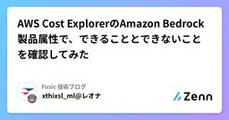
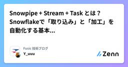

Fusic 技術ブログのフィード
https://zenn.dev/p/fusic
さまざまな個性を受け入れて有機的につなぐ社内環境を整える。あらゆる事業機会の創出と実現を繰り返し、世の中に対する視点を絶えず増やして成長していく。あっと驚くような角度から発展できるポイントを見つけ、そこにいい感じにフィットする形でテクノロジーを組み込んで、世の中をちょっとずつ、時
フィード

AWS Cost ExplorerのAmazon Bedrock製品属性で、できることとできないことを確認してみた
Fusic 技術ブログのフィード
はじめにFusicのレオナです。2026年10月8日に、AWS Cost ExplorerなどでAmazon Bedrockの費用を製品属性で分けられるようになりました[1]。対象はAWS Cost Explorer、AWS Budgets、AWS Cost Management Dashboardsの3つです。Amazon Bedrockを複数人で使うと、どのモデルにいくらかかっているかに加えて、誰がいくら使ったのかも気になります。これまでのAWS Cost Explorerでは、Anthropicのモデルの費用はモデルごとのサービス名に分かれていました。「Claude Op...
1日前

動画を直接埋め込んで監視カメラ動画を日本語で検索する
Fusic 技術ブログのフィード
はじめにこんにちは、Fusicの大宮です。前回の記事では、監視カメラの映像を Gemini で5秒ごとの説明文にして、その説明文を埋め込みモデルでベクトルにし、日本語の質問文で場面を探す、という方式を試しました。https://zenn.dev/fusic/articles/89daab70352eb7前回の記事の最後で、「説明文に書かれていないものは、どんなに良い埋め込みモデルを使っても検索できない」という課題が見えました。そこで今回は、動画そのものをベクトルにする方式を試して、前回の説明文の方式と比べてみました。 結論◼︎ 動画をそのまま埋め込めるモデル2...
2日前

GCPとAWSの埋め込みモデル6つを比較して監視カメラ動画を日本語で検索する
Fusic 技術ブログのフィード
はじめにこんにちは、Fusicの大宮です。今回は、固定の監視カメラなどの映像から「ベンチから立ち上がって歩き出す人」「白い車が駐車場に入ってきて停まる様子」のように、日本語の文章で場面を探したいというテーマで技術検証をしました。流れは以下の通りです。動画を Gemini に渡して、5秒ごとの説明文を日本語で生成させるその説明文を埋め込みモデルでベクトルにする日本語の質問文もベクトルにして、近い順に5秒区間を並べるこのうち 「2. 埋め込みモデル」をどれにするかを、GCP と AWS の6つのモデルで比べてみました。本記事はその結果のまとめです。 結論6...
3日前

Snowpipe + Stream + Task とは？Snowflakeで「取り込み」と「加工」を自動化する基本パターン
Fusic 技術ブログのフィード
以前、Snowflake Dynamic Tablesを使って、データをELTする記事を書きました。https://zenn.dev/fusic/articles/snowflake-dynamic-tables-for-iotELTとは「Extract→Load→Transform」、つまり先に保存してから必要に応じて変換することです。Dynamic Tablesはクエリを定義するだけで変換結果が自動更新される便利な仕組みですが、取り込みの自動化や、変換処理を手続きとして組み立てたい場合には別の手段が必要です。そこで本記事では、S3に置かれたファイルを自動で取り込み、新しく入っ...
6日前

Strands Decider 2Bについて理解する
Fusic 技術ブログのフィード
はじめにFusicのレオナです。Strands Agentsは、AWSが開発し、オープンソースとして公開しているAIエージェント開発用SDKです。LLMに与える指示と利用可能なツールを定義することで、状況に応じてツールを選び、その実行結果を踏まえながら処理を進めるエージェントを構築できます。AWS専用のSDKではなく、Amazon Bedrock以外のモデルAPIやローカルモデルにも対応しています。今回のブログで取り上げる「Strands Decider 2B」は、Strandsの実験的なプロジェクトを扱うStrands Labsから公開された判断用モデルです。Strands ...
8日前
Kaggle Biohub Cell Trackingコンペ振り返り ー343rd Place Solution
Fusic 技術ブログのフィード
はじめにFusicのレオナです。今回は、Kaggleの「Biohub - Cell Tracking During Development」[1]に参加しました。最終結果は4,017チーム中343位、スコア0.920で銅メダルでした。前半は自前で学習したモデルを改良していましたが、途中から公開Notebookのスコアに追いつけなくなりました。9月以降は公開パイプラインを使う方針に切り替え、最後の5日間は後処理の設定を1か所ずつ変えて検証しました。その過程を振り返り、ブログに残します。 コンペ概要「Biohub - Cell Tracking During Developm...
10日前
コーディングエージェントを導入してエンジニアの生産性が上がったのかを計測してみる試み
Fusic 技術ブログのフィード
こんにちは fusic の石橋です最近AIユニットの方でも活動をしておりまして、僕のタスクはAIの導入効果を測定することです。依頼されたこととしていくつかありますが、メインとしては生産性向上を定量化するための指標づくりをしたいという課題に対し、なんとかアプローチするということをやっていますこの問題について正確な計測はむずかしいのですがとりあえず手元にあるデータを活用して「生成AIの活用によって実装作業にかかる時間がどれだけ短縮されたか」を 推定し、人月単価を掛けて金額に変換する、というアプローチに使えるような指標を考えてみました今回は社内のGitHubリポジトリのPRデータ...
11日前
Snowflake Semantic Viewの効果を商品の販売データを例に検証する
Fusic 技術ブログのフィード
はじめにSnowflakeのSemantic Viewは、テーブルやカラムに業務的な名前・説明を与えたり、「売上合計」「客単価」のような集計をあらかじめメトリクスとして定義したりできる機能です。2025年6月にGAし、その後も機能拡充が続いています。https://docs.snowflake.com/ja/user-guide/views-semantic/overview生のテーブル・カラム名の代わりに、業務で使う言葉でデータを問い合わせられるようになります。本記事では商品マスタ・売上データを例に、Semantic Viewを実際に作成します。そして、SELECT *...
13日前
Snowflake管理のMCP serverでエンジニア以外の社員がClaude Desktopから簡単にデータを集計・分析できる環境を作る
Fusic 技術ブログのフィード
はじめに2026年9月10日(木)〜11日(金)に開催された Snowflake World Tour Tokyo 2026 に参加してきました。Keynoteを始め、多くのセッションで 「AI-readyなデータ基盤を構築するためにSnowflakeを活用しよう」 といった話がなされていました。Snowflakeからは Snowflake CoCo や Snowflake CoWork といったSnowflakeと連携可能なAIツールが公開されています。しかし、すでに業務でClaudeをメインで使っている会社だと、Claude環境からSnowflakeに接続できると便利です...
17日前
LiteLLMをCloud RunにデプロイしてGemini APIの利用実績をユーザー 別に取得してみた
Fusic 技術ブログのフィード
はじめにFusicのレオナです。今回はCloud RunにLiteLLM AI Gateway(Proxy)を構築し、Gemini APIの利用実績をユーザー別・モデル別に取得してみました。利用者ごとに仮想キーを発行することで、Cloud Monitoringの標準メトリクスでは把握できない、利用者ごとのトークン数と費用を確認できます。 検証構成LiteLLMをCloud Runで実行し、仮想キーとSpend Trackingの保存先にCloud SQLを使用します。 呼び出すモデル gemini-3.6-flashとgemini-3.1-pro の2つになります。htt...
22日前
Snowflake CLIもmiseで管理したい！pipxバックエンドでインストールする
Fusic 技術ブログのフィード
はじめにSnowflake CLIとは、Snowflakeが提供する開発者向けのコマンドラインツールです。スピーディにアプリケーションを構築したり、SQLを実行したりすることができます。https://docs.snowflake.com/ja/developer-guide/snowflake-cli/indexSnowflake CLIのインストール方法は公式手順 によると、Linuxの場合: debまたはrpmパッケージでインストールするmacOSの場合: インストーラまたはHomebrewでインストールするWindowsの場合: インストーラでインストールする...
1ヶ月前
Amazon Bedrockの初回利用でAnthropicモデルがAccessDeniedになったときに確認したこと
Fusic 技術ブログのフィード
はじめにFusicのレオナです。Amazon Bedrockを初めて利用するAWSアカウントで、Anthropicモデルのユースケース情報を提出し、Claude Sonnet 4.6を呼び出そうとしたところ、次のエラーが発生しました。AccessDeniedException: Model access is denied due to IAM user or service role is not authorizedto perform the required AWS Marketplace actions (aws-marketplace:ViewSubscripti...
1ヶ月前
Strands Agentsのプロンプトキャッシュで 社内RAG Agentの入力コストを半減させてみた
Fusic 技術ブログのフィード
背景こんにちは、Fusicの大宮です。私は、社内向けSlack Botである「Fusicマン+」の運営をしています。Fusicマン+は、Confluenceの社内ハンドブックを検索して質問に答えるRAG AI エージェントです。運用開始してから時間も経過していたので、改めてコストを見直したい思い運用コストを調べていたところ、ECSやSecretManagerなどの固定費は月＄13~15であるのに対し、変動費はBedrockのトークン課金だけで月＄20~＄30かかっていることがわかりました。今回は、そんなFusicマン+の現状を測定 & コストを抑える方法を調査,実装...
1ヶ月前
Snowflakeのデータが可視化しにくい？MetabaseでIoTデータのダッシュボードを構築する
Fusic 技術ブログのフィード
はじめにSnowflakeに自室の環境センサーの測定値を蓄積しはじめて1ヶ月が経過しました。https://zenn.dev/fusic/articles/stream-iot-data-to-snowflakeこれまで溜まったデータはSnowsightでSQLを実行することで確認していたのですが、SQLを実行するのは毎回手間ですし、データの量が増えたことでなかなかグラフが描画されないといった課題が顕在化してきました。Snowflakeにデータを蓄積すれば可視化まで一気通貫で実現できると思っていましたが、本格的な可視化をしようとすると Snowflake App Runtim...
1ヶ月前
Kaggle AI Agent Securityコンペ振り返り ー345th Place Solution
Fusic 技術ブログのフィード
はじめにFusicのレオナです。今回は、Kaggleの「AI Agent Security - Multi-Step Tool Attacks」[1]に参加しました。最終結果は4,186チーム中345位、スコア6.675で銅メダル。Public Leaderboard(以下、Public LB)では良く見えた本命がPrivate Leaderboard(以下、Private LB)で落ちましたが、2本目に別ルートのヘッジ案を残していたおかげでスコアがつきました。[2]その過程を振り返り、ブログに残します。 コンペ概要「AI Agent Security - Multi-St...
1ヶ月前
Kaggle Pokémon TCG AI Battle Challenge ポケカコンペ振り返りーメダルなし
Fusic 技術ブログのフィード
はじめにFusicのレオナです。今回は、Kaggleの「The Pokémon Company - PTCG AI Battle Challenge Simulation」に参加してみました。最終結果は6,807チーム中1,160位、スコア797.4。暫定ランキングでは一時的に39位まで上がりましたが、最後まで維持できず、メダルには届きませんでした。その過程を振り返り、ブログに残します。なお筆者はポケモンカードゲーム(以下、ポケカ)未経験です。 コンペ概要「The Pokémon Company - PTCG AI Battle Challenge Simulation」は...
1ヶ月前
Snowflake × IoT: Amazon MSK(Apache Kafka)を経由してセンサーデータをSnowflakeへ流し込む
Fusic 技術ブログのフィード
はじめに以前の記事で、M5Stack + ENV Ⅲ ユニットで計測した温度・湿度・気圧データを、AWS IoT Core → Amazon Data Firehose → Snowpipe Streaming経由でSnowflakeへ蓄積する仕組みを構築しました。https://zenn.dev/fusic/articles/stream-iot-data-to-snowflakeAmazon MSK(Managed Streaming for Apache Kafka)でもSnowflakeへデータを配信できます。AWS IoT Coreが受け取ったメッセージをKafka...
1ヶ月前
3Dの勉強がてら、車のカラーコンフィギュレータ作ってみた
Fusic 技術ブログのフィード
この前、福岡-鹿児島（指宿、枕崎）を往復して800kmちょっと走った石橋です。僕の愛車 ポルシェ・ボクスター 986型 なんですが時々「別のボディカラーだと、どんな感じになるかな」と気になることがあります。なんやかんや今のブラックが一番好きなので変えるわけではないのですが、ツーリング等で同じ型式の別カラーがたまたま居合わせた時じゃないと別カラーの実車は見れません。現在のポルシェのwebページに行けば現行車のコンフィギュレータはあるんですが、過去車については出ていません。https://models.porsche.com/ja-JP/model-start（僕の乗っている型の車...
1ヶ月前
Snowflake Alertを使ってIoTデバイスから収集したデータのしきい値超過を検知する
Fusic 技術ブログのフィード
はじめに以前の記事で、M5Stack + ENV3ユニットで計測した温度・湿度・気圧データを、AWS IoT Core → Kinesis Data Firehose → Snowpipe Streaming経由でSnowflakeへストリーミング・蓄積する仕組みを構築しました。https://zenn.dev/fusic/articles/stream-iot-data-to-snowflake今回はこのデータ基盤を使って、「環境センサーで計測した温度が30度を超えたらメールで通知する」というよくある監視要件を、Snowflakeの機能だけで実現します。使うのはSnowfl...
2ヶ月前
Snowflake Dynamic tables を使ってIoTデバイスから収集したデータをELTする
Fusic 技術ブログのフィード
Snowflake Dynamic tables(動的テーブル)は定義されたクエリとターゲットの鮮度に基づいて自動更新されるテーブルを提供する機能です。AWSでELT(Extract->Load->Transform)を実現しようとするとAWS GlueやAWS Lambdaといったサービスを間に挟む必要があり、構成や設定が複雑化しがちですし、それらのメンテナンスにも一定のコストがかかります。一方で、動的テーブルはSnowflakeに蓄積したデータをSQLで変換し定期的に別テーブルとして自動更新するため、Snowflake内に完結しますし、楽です。本記事ではSnow...
2ヶ月前